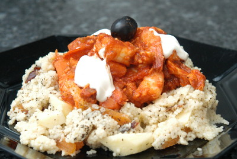

| Zutaten für 4 Personen: | |
| 160 g | Red-Snapper-Filet |
| 120 g | Lachsfilet |
| 240 g | Krevettenschwänze |
| Salz | |
| Pfeffer aus der Mühle | |
| 260 g | Rüebli |
| 2 Kl | Olivenöl |
| 1 | Zwiebel |
| 1 | Knoblauchzehe |
| 20 g | Harissa (scharfe Gewürzmischung) |
| 4 El | Tomatenpüree |
| 240 g | Pelati |
| 200 g | Couscous |
| 3.2 dl | Gemüsebouillon |
| 20 g | Aprikosen, halbiert, getrocknet |
| 20 g | Datteln, getrocknet |
| 20 g | Apfel |
| 20 g | Cranberries |
| 4 g | Pfefferminze, frisch |
| 4 Kl | Zitronensaft |
| 1 | Zwiebel |
| 120 g | Demi Creme Fraîche |
| 16 Blätter | Koriander, frisch |
Fisch-Krevetten-Ragout:
Fischfilets in 2 cm grosse Würfel schneiden. Krevetten und Fischwürfel mit Salz und Pfeffer würzen.
Rüebli waschen, schälen und in 1cm grosse Würfel schneiden.
Olivenöl in einer beschichteten Pfanne erhitzen und Zwiebeln, Knoblauch und Rüebli darin andünsten.
Harissa, Pelati und Tomatenmark beigeben, köcheln lassen bis die Rüebli gar sind.
Krevetten und Fischwürfel beifügen und ziehen lassen bis diese gar sind.
Couscous:
Couscous mit kochend heisser Gemüsebouillon übergiessen. Abdecken, 5 Minuten ziehen lassen, umrühren und wieder abdecken.
Aprikosen in Streifen und Datteln in Scheiben schneiden. Apfel waschen, schälen und in 1 cm grosse Würfel schneiden. Früchte und Minze dem Couscous beigeben und mit Salz, Pfeffer und Zitronensaft abschmecken.
Garnieren, servieren:
Couscousring auf einem Teller anrichten und Fisch-Gemüseragout in die Mitte geben. Gericht mit Demi Creme Fraîche und Koriander garnieren.
eBalance
Por Portion zu 493g = 522 kcal. 27% Protein, 46% Kohlenhydrate, 28% Fett
Ganz tolles Gericht. RE Feb 2013
@LINKBACK_TAG@ @WAKELOCK@